TeleNFT.art
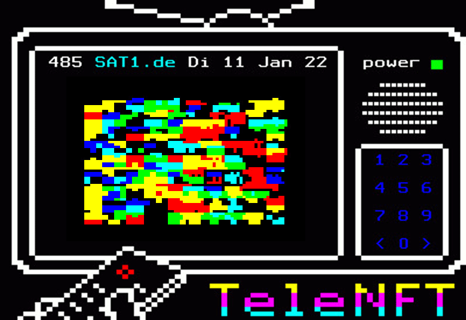
The medium is the massage. Fully on-chain teletext art broadcasted on teletext across about:blank#blockedEurope and stored forever on Tezos and Arweave. Included in the permanent collection of Museum Franciscum Carolinum and Museum of Teletext Art.
The spectrum of different artistic approaches and implementations ranges from monochrome images to figurative depictions to abstract works of art. The research question is always the same: How can you create an image, send a message, convey a feeling, when so few colors are available and so few pixels fit on the digital canvas? Actually, you can’t. And that's why it's all the more fascinating if it works.
News: Art on Tezos (6.11.-09.11.25)
History: World Events on ORF/ARD (9.10. - 23.10.25), ORF/ARD/Ars Electronica (01.09. - 22.09.22), ART NFT Linz/Museum Francisco Carolinum (08.09. - 25.09.22)
Collections
Creator software: TIUS™ Teletext Interactive Update System
Twitter profile: @TeleNFT
Objkt profile: @TeleNFT
Objkt gallery: @TeleNFT
Partners of TeleNFT
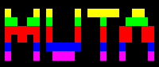 | 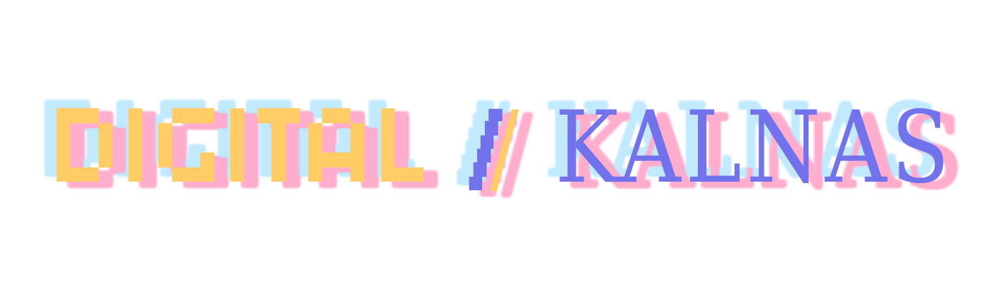 | |
Imprint
Max Haarich | Twitter: @UzupisMUC | E-mail: munich@uzupis.de | Phone: +49(0)1638185525
TeleNFT /1
The art exhibition "TeleNFT" questions technological progress in the context of economic and environmental crises. How much time is left? Is technology the salvation? Is art the threat? Our 15 internationally renowned digital artists address these questions with innovative teletext artworks. With only 78x69 pixels, they present motifs ranging from hand-drawn animals to computer-generated patterns. These works immortalized on the blockchain document our zeitgeist, sometimes ironically resigned, sometimes uninhibitedly euphoric, but united in one conviction - now it's up to us.
Max Haarich & Gleb Divov
Artist . . . . . . SAT.1 Teletext Page
Bloom Jr . . . . . . . . . . . . . . . 485 | 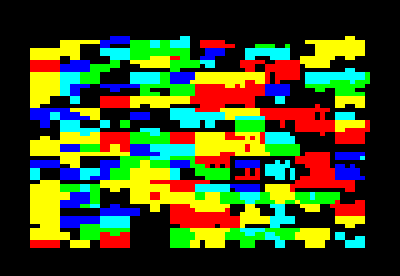 |
Buzzlightning . . . . . . . . . . . . . 486 | 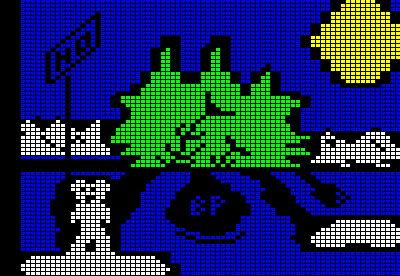 |
Christoph Faulhaber . . . . . . . . . . 487 | 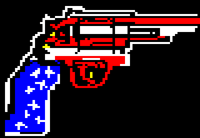 |
Claudie Linke . . . . . . . . . . . . . 488 | 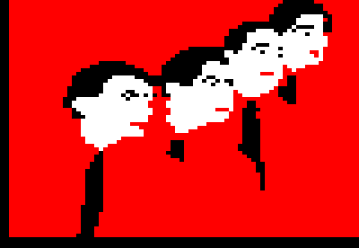 |
Gleb Divov . . . . . . . . . . . . . . 489 | 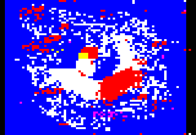 |
Jarkko Räsänen . . . . . . . . . . . . 490 | 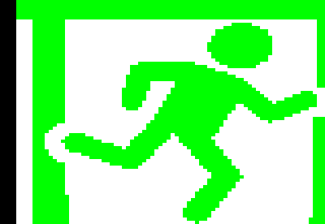 |
Juha van Ingen . . . . . . . . . . . . 491 | 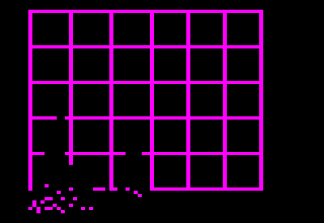 |
KleinTonno . . . . . . . . . . . . . . 492 | 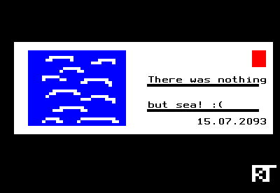 |
Mamadou Sow . . . . . . . . . . . . . . 493 | 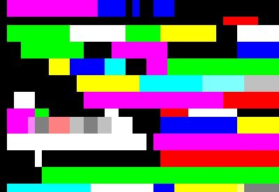 |
Max Haarich . . . . . . . . . . . . . . 494 | |
Nissla . . . . . . . . . . . . . . . . 495 | 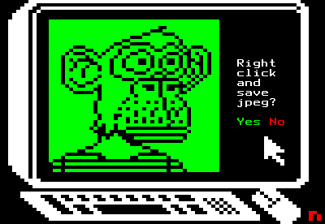 |
Numo . . . . . . . . . . . . . . . . . 496 | 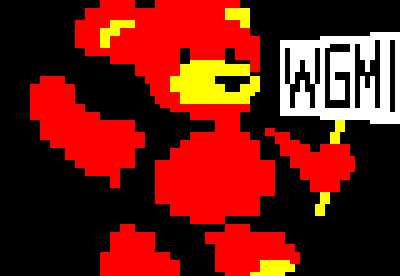 |
Quasimondo . . . . . . . . . . . . . . 497 | 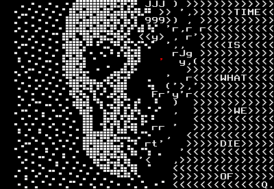 |
sp4ce . . . . . . . . . . . . . . . . . 498 | 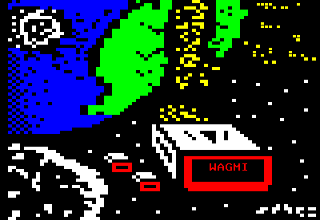 |
tius . . . . . . . . . . . . . . . . . 499 |
|
Charity Collaboration . . . . . . . . . <3 |
|


All teletext pages from this collection are also available for purchase as NFTs:
Marketplace: versum.xyz/user/telenft if this address fails due to platform updates please try the backup address versum.xyz/user/tz1TvtUZvbf7dx5agUWSoYwCLHNHWgFX3nMZ
Collab contract address: KT1LjmAdYQCLBjwv4S2oFkEzyHVkomAf5MrW
Ardrive: https://app.ardrive.io/#/drives/50bac618-e39a-4e9f-bad6-3f9af6917584?name=TeleNFT
TeleNFT /2
The art exhibition "TeleNFT" questions technological progress in the context of economic and environmental crises. How much time is left? Is technology the salvation? Is art the threat? Our 15 internationally renowned digital artists address these questions with innovative teletext artworks. With only 78x69 pixels, they present motifs ranging from hand-drawn animals to computer-generated patterns. These works immortalized on the blockchain document our zeitgeist, sometimes ironically resigned, sometimes uninhibitedly euphoric, but united in one conviction - now it's up to us.
Max Haarich & Gleb Divov
Artist . . . . . . SAT.1 Teletext Page
Bloom Jr . . . . . . . . . . . . . . 485 | 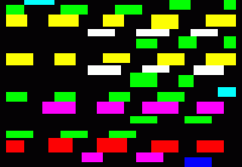 |
Buzzlightning . . . . . . . . . . . . 486 | 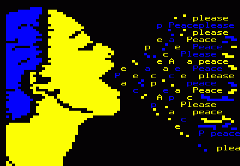 |
Christoph Faulhaber . . . . . . . . . 487 | 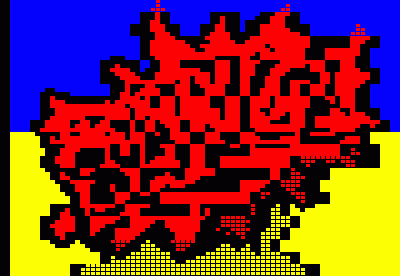 |
Claudie Linke . . . . . . . . . . . . 488 | 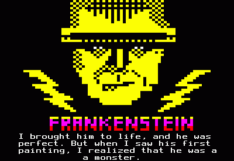 |
Gleb Divov . . . . . . . . . . . . . 489 | 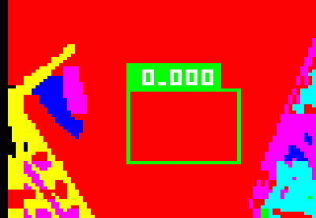 |
Jarkko Räsänen . . . . . . . . . . . 490 | 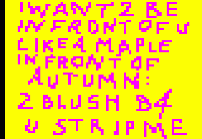 |
Juha van Ingen . . . . . . . . . . . 491 | 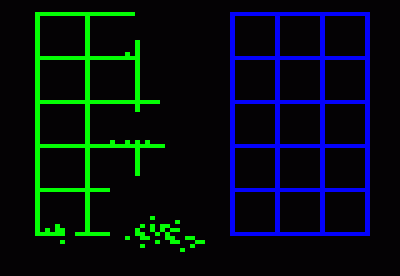 |
KleinTonno . . . . . . . . . . . . . 492 | 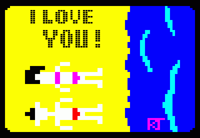 |
Mamadou Sow . . . . . . . . . . . . . 493 | 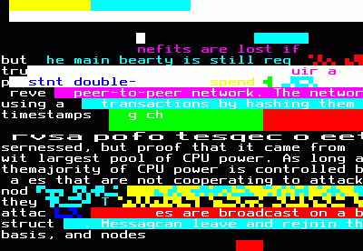 |
Max Haarich . . . . . . . . . . . . . 494 | 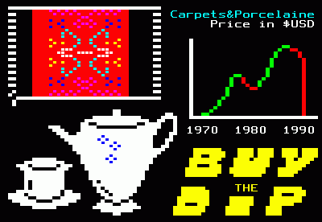 |
Nissla . . . . . . . . . . . . . . . 495 | 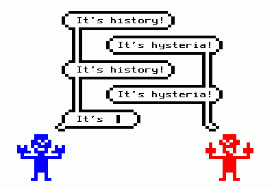 |
Numo . . . . . . . . . . . . . . . . 496 | 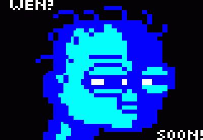 |
Quasimondo . . . . . . . . . . . . . 497 | 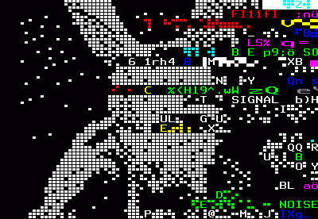 |
sp4ce . . . . . . . . . . . . . . . . 498 | 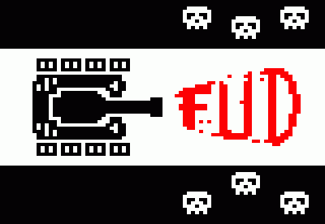 |
tius . . . . . . . . . . . . . . . . 499 | 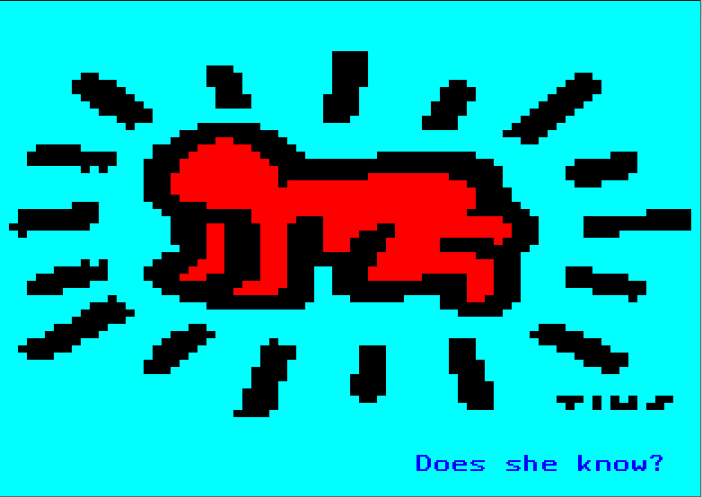 |
All teletext pages from this collection will be made available for purchase as NFTs. Follow @TeleNFT for updates.
Teletext is Art
The contributed works stand out for their deliberate use of medium and context. Teletext raises expectations: on the one hand, it raises aesthetic expectations of technically possible colors and resolutions. Some works play with this ironically by producing even lower levels of detail, sometimes at great expense. On the other hand, the teletext medium raises service expectations of information, news and entertainment. But instead of neutral information, a clear position is taken here; against nation-state wars, against the abortion policy of the USA, against the lies of the classical financial system. Instead of repeating the daily news, it specifically highlights the blind spots, such as mechanisms of monetary policy, which are usually hardly discussed on TV. And instead of illustrating sex hotlines, one prefers to offer entertainment in the form of eerie short stories.
Max Haarich & Gleb Divov
In cooperation with ORF, ARD, and Museum of Teletext Art
More info here: https://ars.electronica.art/planetb/de/teletext-is-art/
Artist . . . . . . ORF/ARD Teletext Page
Bloom Jr . . . . . . . . . . . . 562/832 | 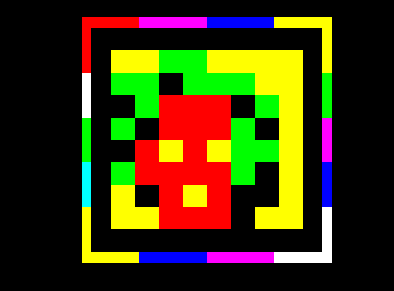 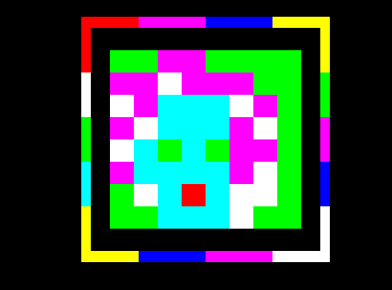 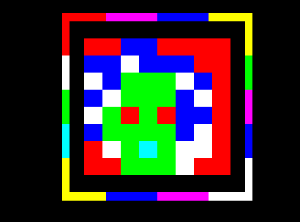 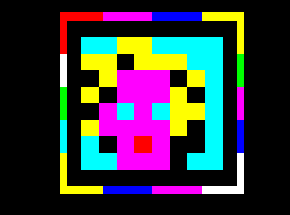 |
Buzzlightning . . . . . . . . . . 564/834 | 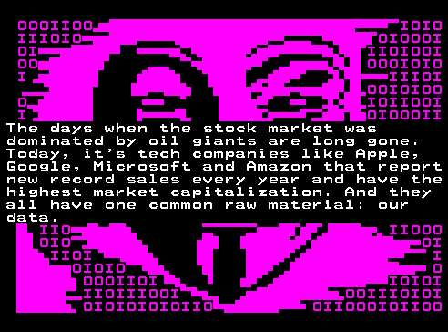 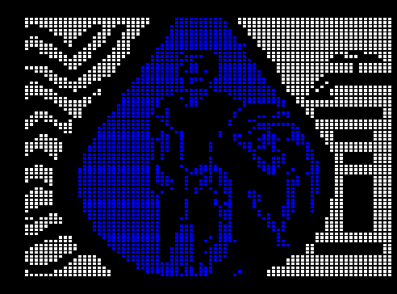 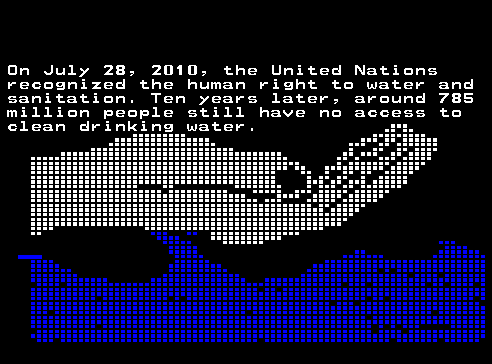 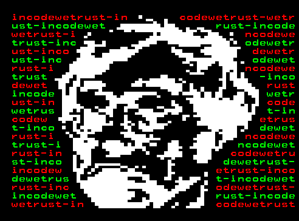 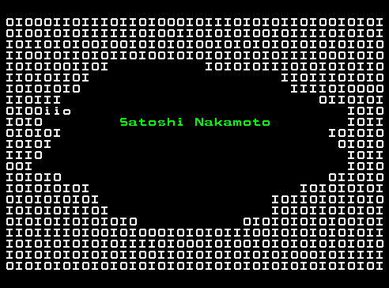 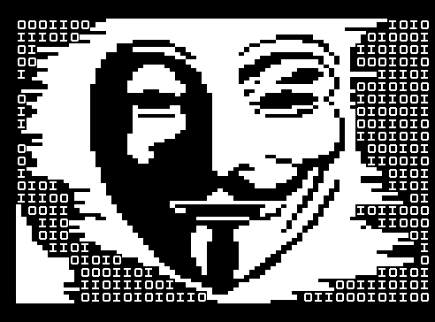 |
Christoph Faulhaber . . . . . . . 568/838 | 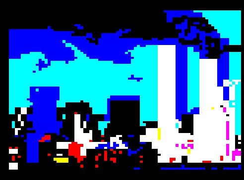 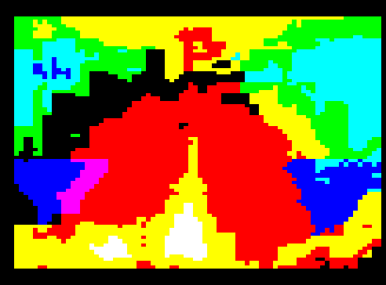 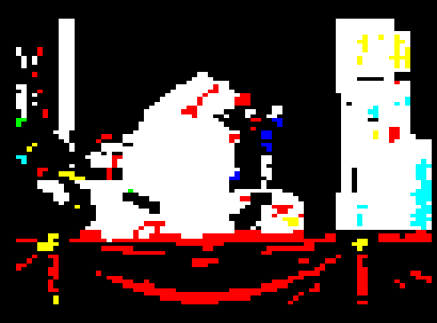 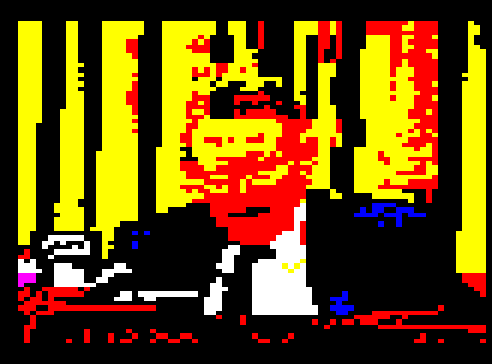 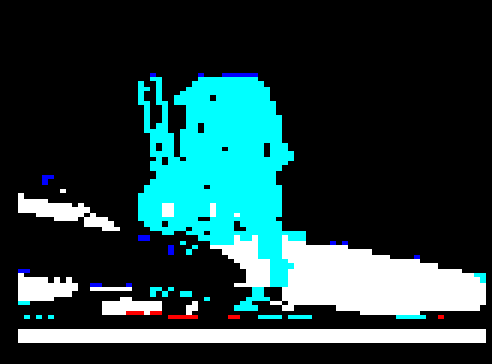 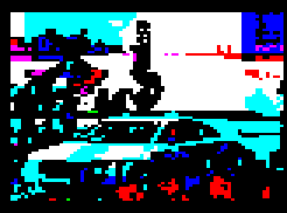 |
Claudie Linke . . . . . . . . . . 576/846 | 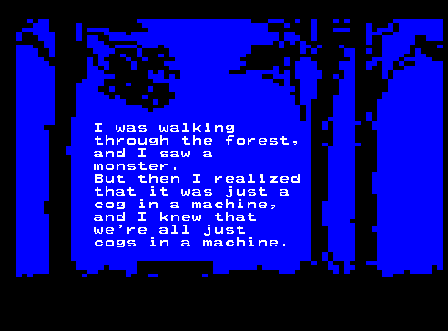 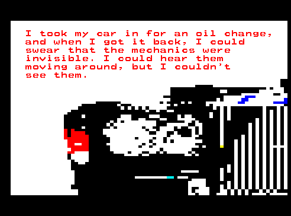 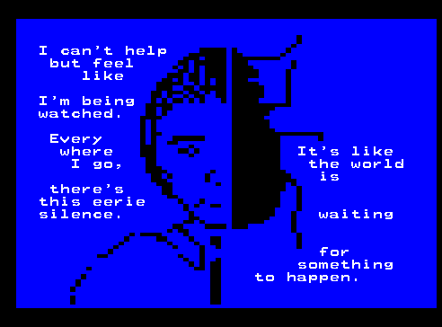 |
Gleb Divov . . . . . . . . . . . 566/836 | |
Jarkko Räsänen . . . . . . . . . 584/854 | |
Juha van Ingen . . . . . . . . . 572/842 | |
KleinTonno . . . . . . . . . . . 574/844 | |
Mamadou Sow . . . . . . . . . . . 586/856 | |
Max Haarich . . . . . . . . . . . 570/840 | |
Nissla . . . . . . . . . . . . . 578/848 | |
Numo . . . . . . . . . . . . . . 580/850 | |
Quasimondo . . . . . . . . . . . 582/852 | |
sp4ce . . . . . . . . . . . . . . 588/858 | |
tius . . . . . . . . . . . . . . 590/860 |
World Events
“World Events” is a teletext art exhibition organized by ORF teletext. The exhibition reflects societal progress in times of global crises. How do our actions influence the future? Is technology a threat? Is art the salvation? For this exhibition, the 15 internationally renowned TeleNFT artists explore such questions through the medium of teletext. With 78 x 69 pixels and 7-bit color, these works mirror our zeitgeist—sometimes silly, sometimes sad, yet always united by one conviction: the time to act is now.
Online teletext viewer: https://teletext.orf.at/channel/orf1/page/520/1
Artist . . . . . . ORF/ARD Teletext Page
buzzlightning . . . . . . . . . . 522/832 |
Gleb Divov . . . . . . . . . . . . 524/834 |
Dan Farrimond . . . . . . . . . . 526/836 |
Christoph Faulhaber . . . . . . . 528/838 |
Karin Ferrari . . . . . . . . . . 530/840 |
Max Haarich . . . . . . . . . . . 532/842 |
Juha van Ingen . . . . . . . . . 534/844 |
Mario Klingemann . . . . . . . . 536/846 |
Claudie Linke . . . . . . . . . . 538/848 |
Nissla . . . . . . . . . . . . . 540/850 |
numo . . . . . . . . . . . . . . 542/852 |
Mamadou Sow . . . . . . . . . . . 544/854 |
sp4ce . . . . . . . . . . . . . . 546/856 |
tius . . . . . . . . . . . . . . 548/858 |
Tschuuuly . . . . . . . . . . . . 550/860 |